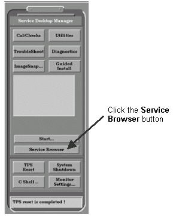
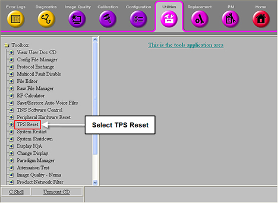

Proprietary to General Electric
Direction 5500113, Rev# 3
Discovery MR750 3.0T Service Methods
Module Version 6.0, Version Date 9/20/10
Proprietary to General Electric |
MGD Stage software can be used as described in Section 1.1 and Section 1.2.
Stage software allows the user to create a custom software configuration suitable for use in software development or system servicing. This is done by custom configuring the Multi-Generational Data Acquisition (MGD) subsystem. Emulation of MGD hardware or functionality is accomplished by editing the mgd_stage file. Emulation allows the system to run without specific hardware present or specific functions activated; this may be helpful for problem isolation.
After editing this file, the emulation selections are applied to the system by downloading the TPS. After emulation is complete, the original mgd_stage file must be restored, and TPS downloaded to restore normal system functions.
| NOTE: | By Staging or Emulating a scanner configuration, the MR Scanner will no longer allow scanning in Clinical or Research modes. The only mode allowed will be "geservice". This will require a Restricted Service Key inserted in the scanner and the use of geservice as the patientID. |
When troubleshooting white pixel issues, certain hardware may need to be removed from the system and emulated out. This document explains the various software emulation modes available when emulating specific hardware. Specific hardware that may need to be emulated out for white pixel troubleshooting is listed in the table below.
Table 1: White Pixel Troubleshooting - Hardware
| Hardware to Be Emulated | Command in mgd_stage File |
| Table and SRI | TR |
| SRI only | R |
| PAC | A |
| Body Coil removed from system | BARTS |
Some of the MGD functions and hardware controlled by the MGD can be emulated by using the gedit or vi text editor to modify the mgd_stage file. Gedit is an easy-to-use text editor (and is the recommended tool to use), and vi is a command-based editor.
The mgd_stage file is located in the /w/config directory. The first line in the file is the only one that is executed. The rest of the file text contains comments, plus a complete description of each emulation command.
To customize the mgd_stage file:
From the Service Desktop Manager, select [C-shell].
At the sdc prompt, type: cd /w/config and press <Enter>.
To edit the file, type either of these two options at the prompt:
gedit mgd_stage and press <Enter>, or
vi mgd_stage and press <Enter>
The Stage menu displays (Table 2 in Section 2.1).
Add the emulation letters to the first line.
Example: Change first line to read aBARTS to emulate the body coil and entire system. (The letter a is a place holder and should not be deleted.) The emulation letters (commands are case sensitive), which represent the desired commands, are entered immediately after the “a” place holder with no space on the first line.
Exit the gedit tool by clicking on [File], select [Exit] , then click on [Save Changes].
After the changes are made, perform a TPS reset.
When the stage menu displays, type the command letter(s) for the hardware to emulate after the a at the top of the file. When the letter listed below is present in the first line (following the “a”), the corresponding device is emulated as described in Table 2.
Example:
If the first line of this file reads aT, then Table control would be emulated.
If the first line of this file reads a, then nothing would be emulated or disabled. This is normal product configuration.
| NOTE: | All commands are case sensitive. For software, these letter options should mirror CFG_STRING in hpc_cfg.h*/. |
Type the command letter(s) for the hardware to be emulated after the a at the top of the file.
Table 2: MGD_Stage Emulation Commands
| Command | Action |
| a ⇐ Insert commands after the “a” (e.g., aT emulates all Table controls). | |
| When the letter listed below (case sensitive) is present in the first line following the ’a’, the corresponding device is emulated as described below: | |
| A | Emulate PAC. This command causes the SPU to generate canned cardiac and respiratory waveforms and to generate cardiac triggers. This should be used when no PAC is present or if no cardiac simulator is available. |
| B | Emulate System Monitoring. This command disables monitoring of the RF Door. This should only be used to allow scanning to continue if the RF Door switch is not functioning correctly. |
| C | Emulate SCIM (Hardkeys). This disables the SCP to SCIM interface. If this is done, start scan, stop scan, pause scan, adv to scan, stop table buttons on the SCIM hardkeys will not work. This should only be used to allow scanning to continue if the SCP to SCIM link is not functioning correctly. |
| E | Emulate the Driver Module on the CAN link. When this is emulated, the SCP will not monitor the DCB board or set any values to it. It will also not initialize it as a valid node on the CANopen network. Any diagnostics that require the Driver Module will fail if emulated. If this emulation is chosen, RF Amp emulation (H) will automatically be set to protect hardware. |
| F | Emulate IRDs. This is intended for targets that do not have DTX, RRX, or XGD modules. When this flag is present, AGP will simulate any missing modules and will not fail TPS_reset because the modules are missing. The IRF3 board must be present. |
| G | Emulate Gradient Amps. The SCP will connect to XGD if it is present. There will be no error reporting or status monitoring. Debug commands may still be sent to XGD with this emulation on. No file updates or tuning parameters (including ECC) will be downloaded automatically. |
| H | Emulate RF Amp(s). When this is emulated, the SCP will not send commands to the RF amplifiers (Analogic narrow band and spectroscopy's ENI broad band), and SCP will not monitor their state. Therefore, the Analogic RF amp will stay in standby, and no RF will be put out. The ENI amp has no standby state, and therefore will put out RF, but the correct filter will not be set. |
| J | Emulate Entire CAN Network. This disables communication to all devices on the CAN link. It will not setup the CAN PMC board and thus all of the devices on the CAN link will not communicate on the link. |
| N | Emulate Shim CAN Node. This disables communications to the CAN DSP on the Shim Supply. The shim currents will not be updated by the host under this condition. |
| R | Emulate SRI. This disables SPI communication to the SRI. It disables magnet shroud annunciators, the scan time display, and landmarking. The alignment lights, fan, and bore light will not work. However, if the SRI has had code downloaded at least once, then table positioning will still work. |
| S | Emulate the bore wall temperature sensor, gradient coil temperature sensors, and airflow sensors. |
| T | Emulate Table. This emulates SRI cradle control and LPCA. Therefore, the table positioning will not work. This eliminates the need to establish a landmark. |
| a | Not used (place holder). |
| b | Emulate RRX with ERF Board. Causes the ERF board to look like a RRX. The F flag must also be present. The IRF3 and ERF boards must be present. The ERF board must be cabled to the IRF3 board. |
| c | Emulate Coil ID. Any coil can be selected and used if this emulation is set, but only for a target or show system. If any coils are connected, they will be checked as if coil ID was not emulated. |
| f | Emulate CAN Fiber-Optic Board. If this emulation is selected, the SCP will not set up the CFB and communication to the nodes connected to the CFB may not be allowed, including the SRI, PAC, and RF Hub. If this emulation is chosen, RF Amp emulation (H) will automatically be set to protect hardware. |
| g | Disable Gradient Processor Application Loading. The SCP will not load the application if this emulation is selected, which can take 30 minutes to complete. |
| l | Emulate Cooling Cabinet Monitoring. Both Ethernet and serial connections with the Cooling Cabinet will be ignored, alarms will not be reported, and feedback variables will not be logged. |
| p | Disable UPM. This will disable the power monitoring of the CAN Power Monitor and will allow scanning without the presence of the power monitor. |
| r | Emulate RF Hub. If this emulation is selected, the SCP will not communicate to the RF Hub. Any diagnostics that require the RF Hub will fail if emulated. If this emulation is chosen, RF Amp emulation (H) will automatically be set to protect hardware. |
| s | Emulate the airflow sensors. |
| Example: If the first line of this file reads aT: Table control, SRI cradle control, and LPCA would be emulated. Therefore, the table positioning will not work. This eliminates the need to establish a landmark. If the first line of this file reads a: Nothing would be emulated or disabled. This is normal product configuration. / * Software Note: These letter options should mirror CFG_STRING in hpc_cfg.h */ | |
Automatic Emulation of some features will occur when certain codes are selected to emulate. For example: To emulate the SRI, use SRI=R for the emulation letter. Auto-emulation will also emulate S, T, and G: S = No bore temp, grad coil temp, or airflow sensors; T = No motor, cradle, and LPCA hardware; G = No XGD amps (scanner will not scan).
Table 3: Automatic Emulation Field Names and Descriptions
| Field Name | Field Description |
| Emul Code | Emulation Code used in the mgd_stage file to select a device for emulation. |
| Auto Emul | Required additional emulation when the selected emulation code is used. |
| Emulation Requirement | Emulation requirement for the given Emulation Code. |
| Notes | These are notes for reference only. |
Refer to the following table for Auto-Emulate Code descriptions.
Table 4: Automatic Emulation Code Descriptions
| Letter | Emulation Letter Code Descriptions |
| A | Auto Emulation: N/A The system shall allow scanning if no PAC is present. Note: There is a small possibility that the user could consider the emulated waveform to be the true patient waveform, which will cause incorrect interpretation of the patient condition. |
| B | Auto Emulation: N/A The system shall allow scanning if the RF door switch is missing or broken. Note: If scanning is performed with the RF door open, the scanner will emit RF noise, and possibly generate bad images. |
| C | Auto Emulation: N/A The system allows scanning with no SCIM. |
| E | Auto Emulation: H The system allows scanning with no Driver Module. Note: The RF Amplifier is auto-emulated here to protect coils from being driven without bias. |
| F | Auto Emulation: N/A AGP provides minimal emulation for missing DTX, RRX, and XGD modules and allows TPS Reset to pass if these modules are not present. |
| G | Auto Emulation: N/A The system allows scanning with no XGD Amplifiers. Note: This does not prevent waveforms from reaching XGD. |
| H | Auto Emulation: N/A The system shall allow scanning with no RF Amplifier or RF Amplifier I/F Board. Note: Could scan without useful images. |
| J | Auto Emulation: E , H, N, R, S, T, f, p, r The system allows scanning with no CAN link communication. Note: All of the CAN nodes are auto-emulated, including the RF Amp, to avoid driving a coil without bias. |
| N | Auto Emulation: N/A The system will allow scanning with no Shim supply. Note: This prevents the proper shim values from being sent, which can degrade image quality. |
| R | Auto Emulation: S,T,G The system allows scanning with no SRI present. Note: “S” and “T” are part of the SRI and must be set. |
| S | Auto Emulation: G The system allows scanning if no bore temp, gradient coil temp sensors, or airflow sensors are present. Note: The auto-selection of “G” prevents the coil from overheating. |
| T | Auto Emulation: N/A The system allows scanning with no motor, cradle, and LPCA hardware. Note: This allows scanning off the scan plane. RF Hub coil port cable detect is disabled. |
| a | Auto Emulation: N/A Place holder only - no requirement associated with this code. |
| b | Auto Emulation: N/A AGP programs the ERF to appear to the IRF Board as an RRX. AGP does not fail TPS reset due to not having a real RRX. Note: Not useful to the field. Can only use at a target with special hardware. No system or patient damage threat. |
| c | Auto Emulation: H, r The system will allow scanning without Coil ID. Note: The RF Hub and RF Amplifier are auto-emulated to avoid driving an undetected coil without bias. |
| f | Auto Emulation: S, R, T, r, A The system will allow scanning without CFB present. This also includes all nodes associated with this device. Note: CFB communicates with the SRI, RF Hub, and PAC. These nodes must also be emulated. |
| g | Auto Emulation: N/A The system allows scanning without loading new application code to the XGD cabinet. |
| l | Auto Emulation: G,H The system allows scanning without PLC monitoring the cooling system while the RF and XGD are emulated. Note: The Gradients and RF Amplifier must be emulated to prevent over temperature conditions with these devices. |
| p | Auto Emulation: N/A The system allows scanning with no UPM. Note: With this emulation, there is no SAR monitoring. |
| r | Auto Emulation: H The system allows scanning with no RF Hub. Note: The RF Amplifier is auto-emulated to avoid driving a coil without bias. |
| s | Auto Emulation: N/A The system allows scanning with no airflow sensors. |
To apply the emulation choices, Save and Exit the changed file.
Select [TPS Reset]. There are two ways to do this from the Service Desktop Manager:
Either select the [TPS Reset] button, or
Click on the [Service Browser] button, as shown in Step Illustration 1. On the Common Service Desktop, select the Utilities tab. On the menu at the left, select TPS Reset (shown in Illustration 2).
When the prompt Do you really want to reset TPS? displays in the right pane of the Common Service Desktop (or WARNING: TPS Reset? in the Service Desktop Manager), click the [Yes] button.
Illustration 1: Location of Service Browser Button

Illustration 2: TPS Reset Option on Utilities Tab

Following completion of emulation, the mgd_stage file must be edited to its original state using a text editor. This file is located in the /w/config directory.
To edit the file, enter either of these two options at the prompt:
gedit mgd_stage and press <Enter>, or
vi mgd_stage and press <Enter>.
Edit the first line in either file so it only contains the letter a (for example, change aT to a).
After you save and exit the changed file, reset the TPS by selecting [TPS Reset] from Utilities on the Common Service Desktop. After the TPS is reset, normal function is restored.
Perform a validation or goodbye scan.
Table 5: Acronym Definitions
| Acronym | Definition |
| ADC | Analog to Digital Converter |
| AGP | Applications Gateway Processor |
| ASC | Amplifier System Control |
| BLD | Board Level Diagnostics |
| CAN | Communication Area Network |
| CAM | Combined ASC MGD |
| CFB | CAN Fiber Board |
| CSD | Common Service Desktop |
| CTQ | Critical To Quality |
| DASM | Data Administration Standards Manual |
| DAQ | Data AcQuisition |
| DD | Dynamic Disable |
| DRF | Digital Receiver Filter |
| DRS | Design Requirement Specification |
| DTI | Diffusion Tensor Imaging |
| DTD | Document Type Definitions |
| DSP | Digital Signal Processing |
| DTX | Digital Transmitter (Exciter) |
| DVMR | Dynamic Volumetric MR |
| ECC | Eddy Current Compensation |
| EOL | End of Life |
| EPI | Echo Planar Imaging |
| ERF | Extended Receive Functionality |
| FGRE | Fast Gradient Recalled Echo |
| FRU | Field Replaceable Unit |
| FSE | Fast Spin Echo |
| GEHC | General Electric Healthcare |
| GMC | Gradient Master Controller |
| GST | Global Services Technology |
| GUI | Graphical User Interface |
| HART | Hardware Revision Tracker |
| HFD | High Fidelity (Gradient) Driver |
| ICN | Image Compute Node |
| IRD | In-room Display |
| IRF | Interface Remote Functionality |
| MC | Multi-channel |
| MGD | Multi Generation DAS |
| MNS | Multi Nuclear Spectroscopy |
| MTBF | Mean Time Between Failure |
| PAC | Physiological Acquisition Controller |
| PDU | Power Distribution Unit |
| PCI | Peripheral Component Interconnect |
| PMC | PCI Mezzanine Card |
| PSD | Pulse Sequence Database |
| RF | Radio Frequency |
| RDA | Remote Data Acquisition |
| RRx | Remote Receiver |
| SCIM | Scan Control Interface Module |
| SCP | Scan Control Processor |
| SDD | Software Design Document |
| SNR | Signal-to-Noise Ratio |
| SPT | System Performance Test |
| SRF | Sequencer Related Function Board |
| SRI | Scan Room Interface |
| TDM | Transient Noise Detection |
| TNS | Transient Noise Suppression |
| TPS | Transceiver Processing and Storage |
| TR | Transmit - Receive |
| TRF | Trigger and Rotation Board |
| TRM | Twin Resonator Module |
| UIF | User Interface |
| UNO | Universal Network Operation |
| UPM | Universal Power Monitor |
| USB | Universal Serial Bus |
| VRE | Volume Reconstruction Engine |
| VRF | Volume Reconstruction Filter |
| XGD | eXtreme Gradient Driver |
| XRMB | eXtreme Resonance Module for whole Body |